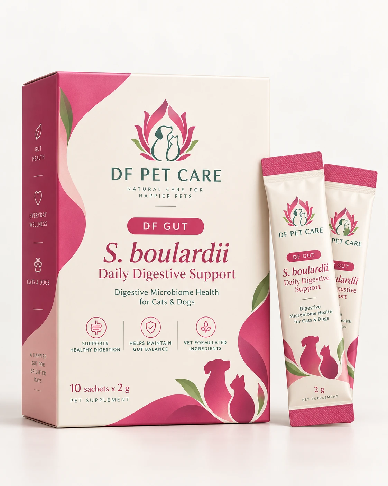
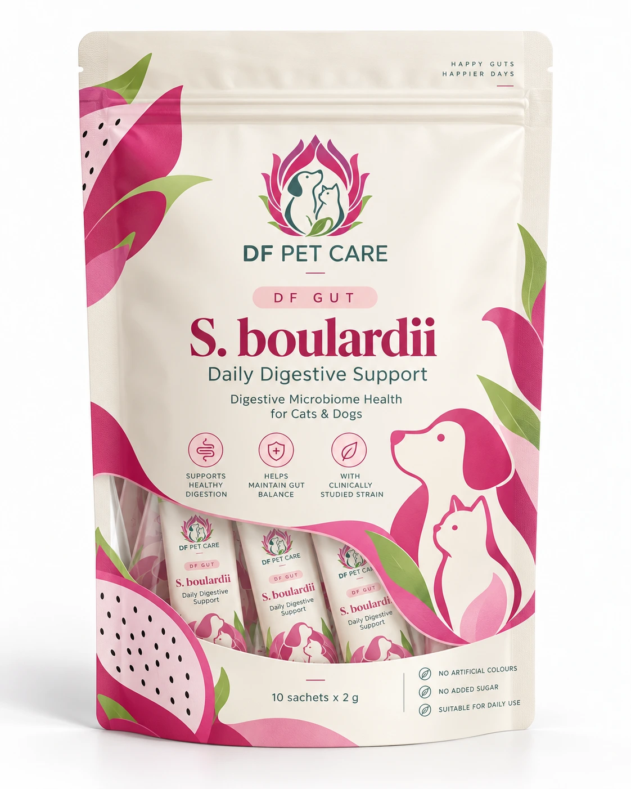

Science-led Microbiome Wellness for Pets
The Right Science.
The Right Solution.
For Every Pet.
Thoughtful microbiome care, inspired by the family members who make our lives whole.
GUT HEALTH / ORAL CARE / SKIN WELLNESS

DF GUT · DAILY DIGESTIVE SUPPORT
Understanding pet microbiome health
A tiny world.
A big part of their well-being.
Just like humans, cats and dogs are home to diverse communities of microorganisms. In the gut, mouth and skin, these communities interact with digestion, immune function and the body’s natural protective barriers.
01 / GUT
Digestive wellness
Supporting digestive wellness and healthy microbial function.
02 / ORAL
A balanced oral environment
Understanding the microbial communities that shape the oral environment.
03 / SKIN
Healthy protective barriers
Exploring the relationship between skin microbes and healthy skin barriers.
At DF Pet Care, we believe thoughtful pet wellness begins with understanding the microbiome.
Our story
Because every pet
is family.
Our name began with a little boy nicknamed “Dragon Fruit”. It grew into a belief: the pets who share our lives deserve the same thoughtful care we give to those we love.
Based in Hong Kong, we bring this personal commitment to the fascinating world of pet microbiome health.
Meet DF Gut
Small sachet.
Thoughtful science.
S. boulardii Daily Digestive Support
A powdered supplement featuring Saccharomyces boulardii CNCM I-1079 and mannan oligosaccharides (MOS), developed to complement everyday digestive wellness.
10 × 2g sachets · For cats & dogs
